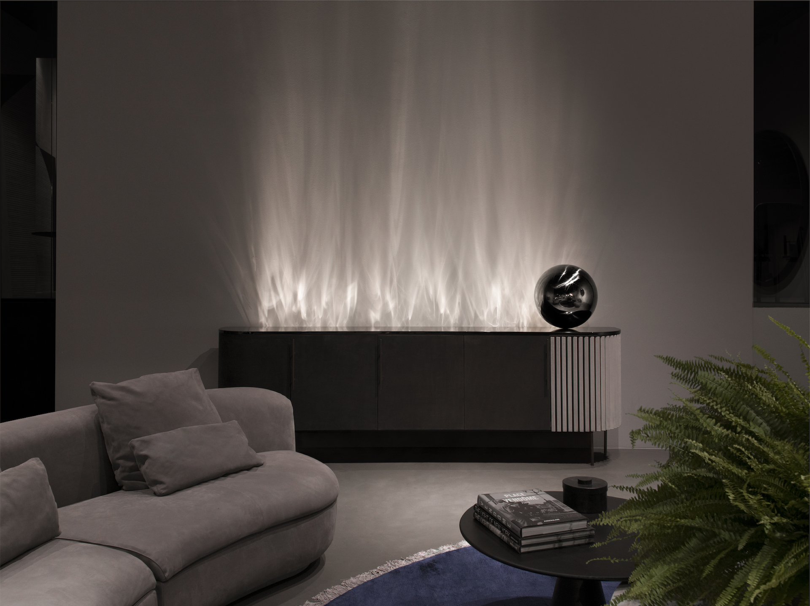

Week 2: Planning & Experiments
Why is Dissertation due in 7 weeks?
I have quite a bit of work to catch up on in order to write enough content for the paper. At the moment, I lack substance for 2 of the 3 aspects of Nature so every single day counts.
Dissertation Consultation
Andreas broke down the stages of the 3 students and how they were able to tackle the challenge of writing their dissertation.
In the short span of time left, that is 7 weeks, my hopeful plan to hit a stage of user-testing seems a little out of reach. He recommends that I take a more pragmatic approach and begin listing like Matthew and Li Qian the steps taken during the experimental phases and note down key learning points that may paint a better picture for the reader — one that explains a clear path forward.
I shouldn’t shy away from what I’ve already done because I don’t have a lot so trying to filter content now would be more detrimental than helpful.
Weekly Plan
To ensure I attempt all 3 aspects of nature to some extent, Andreas required me to create a weekly plan up until the submission deadline for dissertation. The full plan along with explanations and potential changes can be found here
(Link might not work after 2023 since it's linked to my school email).
Water Experiments
Sketch
I’ve had a couple of ideas on what the water mechanism might look like, mainly involving a direct light source shining off-axis to the plane of the water surface. The only notable difference between each idea was how the water moved, ranging from an oscillating rotor to a rotating wheel. But the main player would be the light source so I tested that first, I have reason to believe that it won’t work with regular lights as the only examples I’ve found are of direct sunlight.
Physical Experiment
I experimented with two different angles of light source, one from above the water body, one from underneath. For the top source, a total of 3 different angles was also tested to see whether there was an optimal degree to achieve brighter reflections.
Based on the short exercise, I found that the most direct top angle provided the clearest reflection whereas the steepest side angle had the visual with least clarity due to the light source itself shining onto the wall. As for the underside light source, it was largely ineffective. Some possible reasons for this include the transparency of the material of the water container, the angle at which the light shined upwards and for both exercises, the intensity of light.
Gif: Poking the water.
Gif: Pushing the water.
It is still unclear whether using actual water can be considered super ineffective and I should move on. Another exercise to try out is a top down reflection onto a dark opaque body of water.
Case Study

Kicking off the first experiment for the other 2 nature developments, I sketched out a rough concept based off a project I found online.
The project was able to replicate water reflections off the wall with the use of specially curved glass. I wasn’t sure what to do at the moment so based on the available things I have that is the stepper motor, some wood to laser cut as well as the LED strip that Andreas has loaned me before, I set off to recreate the product.
Arduino Experiment
Connecting the stepper motor wasn’t straightforward. I couldn’t find the specific motor model on the Arduino site and was quite confused until I started searching on Youtube. Not too aware what’s going on behind the scenes on why there’s so many wiring going on but with this and the respective code, it works seamlessly
I was also able to add the LED onto the same board. The use of a breadboard was purely logistical - all my female connectors were way too long and the system was already looking messy so I circumvented it with a small board along with short male connectors.
My understanding on the code for both pieces here are very limited. For now I’m able to get all the lights to switch on while the motor runs indefinitely. Not really sure what else I will do with the controls but for now it’s a proof of concept that this works in real life.
I spent some time on Tuesday laser cutting a generic base out of wood but wasn’t really aware what the wiring would look like hence the lack of room for it.
For now, propping the entirety up with some makeshift styrofoam hollow legs does a good job in giving us a rough idea of how much wider the bottom section should be in order to hide all the wirings.
The visual of the refraction works to a certain extent. I found myself quite amazed at it despite it being noisy due to the amount of bumps there are on the water bottle. If I had the resources and skills, I definitely would make something that’s more elegant.
Issues
The bottle keeps coming off. The way the bottle connects to the motor needs to be precise while the other end should have some sort of stopper to ensure it doesn’t slip off.
The wired connections of the motor to the daughter board is sort of loose, I’ve not tried some others that I have but I had an issue of lighting up all 12 LEDs while maintaining the rotation of the motor which I thought was a code issue (you can see in the left image only 6 LEDs are lit). But while taking these images, I chanced upon that loose connection and after some physical work was able to get the full strip working with the motor.